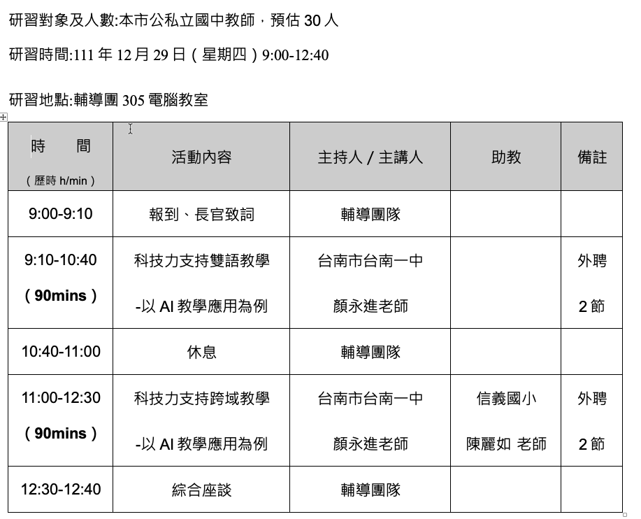
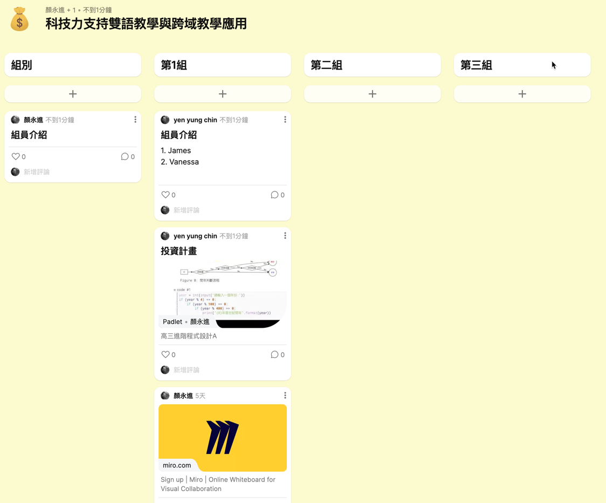
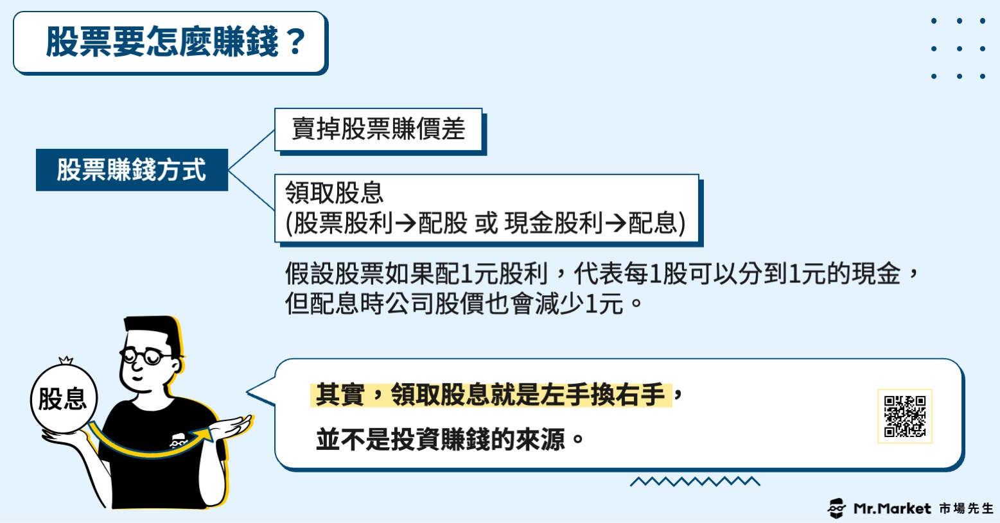

科技力Ⅹ雙語Ⅹ跨域教學示例
Table of Contents

1. 研習內容
- 研習對象及人數:本市公私立國中教師，預估30人
- 研習時間:111年12月29日（星期四）9:00-12:40
研習地點:輔導團305電腦教室

2. 跨域X雙語 powered by 科技力
2.1. Say Hi
- Where are you from
2.2. 跨域-Why
2.3. 跨域-How
- 芬蘭：以主題為主、培養跨領域，跳脫形式，認識解決問題
- 大學：輔系、雙主修、科技法律
- 成大：College X: 跨系、跨院、跨齡，跨領域X實踐X社會影響力
2.4. 雙語-Why
- 學習資源豐富
- 未來工作需求
2.5. 雙語-How
- 目的是什麼?
- The Hole in the Wall1
- 英國紐卡斯爾大學教育、交流和語言科學學院的教育技術教授蘇伽特·米特拉（Sugata Mitra）
- 20多年前，蘇伽特為了試驗「公共空間智能終端」項目的可行性，同時也為了檢驗他在1988年寫的一篇論文（其中提到可以讓孩子在無人協助的情況下自己玩電腦），1999年，蘇伽特決定在辦公大樓的外牆上安裝一台只能通過滑鼠操作的電腦，屏幕面向荒地，電腦離地一米左右，外罩金屬蓋子，既確保電腦安全，也方便孩子們使用。
- 安裝好後他就在一旁觀察。
- 他發現，成年人路過的時候一般都是視若無睹，而孩子們不一樣，他們會停下來，指指點點，甚至上去摸兩把。
- 過了三個月再回來，他驚奇地發現，從沒接觸過電腦、也不會說英語的孩子們竟然無師自通地學會了瀏覽網頁、下載，甚至還掌握了一些生物、遺傳學的知識。
- 手腳沾滿泥巴、滿臉好奇的拉金德就是這些孩子中的一員，如今他已是小有名氣的電腦高手。當時他只有八歲， 由於學習能力強，拉金德很快就成了孩子們的「老師」。
- 拉金德還琢磨了不少用印地語傳授心得的法子。他不是用電腦屏幕上使用的英語，而是用印地語把箭頭稱為「針」，他指點小夥伴們：「看，『針』刺到哪兒，哪兒就有反應。」他還把電腦上的沙漏計時器說成是個「鼓」，因為沙漏的形狀很像他們常見的一種鼓樂器。他指導夥伴們一定要有耐心：「等一下，鼓裡碎沙都掉下來之後，你要看的圖畫才能出現。」
- 英國紐卡斯爾大學教育、交流和語言科學學院的教育技術教授蘇伽特·米特拉（Sugata Mitra）
- 一言以蔽之
創造一個學生不得不用的環境-Learning english by using tools
- 英文影片、網站
- 英文界面軟體
- 課程內容部份使用英文
- Email / Feedback / Comments
- VPL-4C: Number modifier
- VPL-5C: XY coordinate system
- http://moodle.tnfsh.tn.edu.tw
- MacOS界面-全英文
- 我是為了這個研習把界面改掉的，強迫學生用英文界面，他們應該會很恨我學姐
- 英文影片、網站
- 科技輔助工具
- Web
- How to pronouce: 術語發音的正確性
- Youtube Real Life Example: https://www.youtube.com/watch?v=fnk3uusnEiA
- 科技輔助雙語: Youtube 語速調整/字幕
- How to pronouce: 術語發音的正確性
- Plugins / Extensions for Browser2
- Web
3. 教學計劃：Let’s Make Big Money(高雄發大財)
3.1. 設計理念
科技始終來自惰性
動機始終來自利益
(Yen, 2022)
- 天下攘攘，皆為利往。天下熙熙，皆為利來。《六韜》《史記‧貨殖列傳》
- 倉廩實而知禮節，衣食足而知榮辱。《管子·牧民》
- 用錢能解決的都不是問題，問題是沒錢。《俗話》
3.2. 教學目標
- 在時光倒流的前提下，利用試算表模擬過去六年如果養成投資的習慣，至今的獲利，利用真實數據來說明正確理財的重要性。
- 實際測試以AI預測股價，從中學習AI運作原理及其侷限性。
3.3. 跨域學習內容
3.4. 評量
- 六年投資報酬率
- 股票預測模型準確性
3.5. 分組

- 註冊Padlet
- 填寫分組資料
4. Part I: Way to Become Rich
4.1. 投資從現在開始
學完這門課，你
- 不會變成投資達人
- 不會變有錢
- 不會變成AI專家
但是你會
- 了解投資的重要性
- 也許 開始行動
- 可能 會覺得AI很有趣，將來會花時間去研究它
4.2. Investing - What and Why
- 如何教小孩理財3
時機相當重要。是的，你沒有看錯：幼稚園。
- 研究指出，3歲之時，大腦發展已完成約80%。劍橋大學的研究發現，3-4歲的幼童，已經能理解基本的金錢概念；到了7歲時，與未來財務行為有關的基本概念，通常已經發展完成。
- 普信集團（T. Rowe Price）在2018年的調查中，收集了1,014位家長（擁有年齡介於8-14歲的小孩）和超過1,000位年輕成人（18-24歲）的回應。14%的受訪者表示，家長從來沒有與他們討論過財務議題。而在家長曾與他們討論財務議題的受訪者之中，僅有4%表示，家長是在他們5歲之前就開始與他們討論；30%表示，家長是他們15歲之後才開始與他們討論。
- 巴菲特教給自己孩子的事
- 如何讓思考更有彈性
鼓勵孩子不要在初次嘗試失敗後就放棄。未來，他們遇上財務挑戰之時，創意思考和跳脫框架的能力必定能派上用場。
- 如何開始存錢
富蘭克林（Ben Franklin）曾言，「存一分錢，就是賺一分錢。」協助孩子學習管理金錢的重點之一，就是讓他們了解「想要」和「需要」之間的差別。
訓練活動例如：給孩子兩個錢筒，一個用來存錢，另一個用來放可以花的錢。每當他們獲得金錢之時，例如紅包、零用錢等，就與他們聊聊他們想要怎麼將這筆錢分為存款和花用。
- 如何區別價格和價值
我們全都曾經選擇購買比較貴、品牌比較酷的鞋子或裝置，不去買那個用起來一樣好、但比較便宜的類似產品。
訓練活動例如：列出超市採購清單，然後與孩子一同檢視傳單、報紙和網站，看看清單上的物品是否正在促銷。比較價格，看看某件物品在哪個地方買最便宜。
與孩子一起拿本雜誌、挑選其中一則廣告。問他們：它是在賣什麼？這則廣告嘗試傳達什麼訊息？哪個地方吸引了他們的注意力？這則廣告給他們什麼感覺？它如何說服他們購買產品？
- 如何做出好決定
做出聰明決策的關鍵，就是思考不同選擇如何影響未來的結果。
巴菲特建議以身作則，並在進行決策之時，與孩子討論你的決策，以及它們未來可能產生的骨牌效應。例如：「我們想買台新電視，但冷氣已經壞了，我們得存錢修它。如果不存錢，到了夏天屋裡就會很熱。修好冷氣後，我們就可以考慮要不要買電視。」
讓孩子在如何存錢上，養成做出好決定的習慣。例如，他們想買某個遊戲；問問他們是否真的需要，還是說，他們其實可以用租借的。
- 如何讓思考更有彈性
- 新手該如何投資？10個常見投資工具方法分析
- 研究指出，3歲之時，大腦發展已完成約80%。劍橋大學的研究發現，3-4歲的幼童，已經能理解基本的金錢概念；到了7歲時，與未來財務行為有關的基本概念，通常已經發展完成。
4.3. Investing - How
- 股票(Stock)
- 什麼是股票
股票，就是一間公司為了籌措資金，把公司其中一部分的所有權讓出來的憑證。
- 公司為什麼要發行股票
缺錢
- 為什麼會缺錢
- 經營不善
- 擴大規模
- 經營不善
- 缺錢怎麼辦
- 找銀行借錢-要付利息
- 發行股票，找人
韭菜投資
- 找銀行借錢-要付利息
- 買股票的好處
- 也就是說，你如果買了A公司的股票，A公司有了你的資金，就可以去做一些原本沒錢做的計畫（例如擴大規模），而你則有了A公司的所有權憑證（股票），變成了A公司的股東，股東會有參與公司決策的投票權（但一般人股權通常很小，不會對公司造成太大影響）4。
- 也就是說，你如果買了A公司的股票，A公司有了你的資金，就可以去做一些原本沒錢做的計畫（例如擴大規模），而你則有了A公司的所有權憑證（股票），變成了A公司的股東，股東會有參與公司決策的投票權（但一般人股權通常很小，不會對公司造成太大影響）4。
- 股票怎麼賺錢

- 股價上漲
對投資人來說，股票獲利最主要是來股價上漲，而股價上漲則來自公司價值成長，以及人們對公司未來的看法。舉例來說：股價從買進時的10元上升到12元，那麼這時每一股你就賺進了2元，持有1000股就賺了2000元。當然，如果你沒賣掉，股價會隨時間繼續變化4。
- 配股/配息?
假設股票如果配1元股利，代表每1股你可以分到1元的現金，1000股就得到1000元，這筆錢會進入你的帳戶，你可以選擇繼續投資或者挪作他用，但配息時公司股價也會減少1元，也就是你持有的1000股，總價值會減少1000元4。
- 除息：就是配發現金股利，股價扣除相應市值
- 除息的計算就是：配發1元的現金股利，股價就減少1元
除息計算公式如下：
除息後股價 = 除息前股價 - 現金股利(元)
- 例如：台積電股價100元，每股配3元現金股利，除息後股價 = 100 - 3 = 97元，
你有 1張(1000股)台積電，除息前市值10萬元。
除息後可以得到3000元的現金股利，但股價除息後變成97元，
於是你擁有的變成 3000元現金股利，和市值97000元的股票。
因此整體而言，價值還是10萬元。
- 除息的計算就是：配發1元的現金股利，股價就減少1元
- 除權：就是發放股票股利，股價扣除相應市值
除權的計算是，如果股本膨脹 1倍，股價就減少 1倍。例如：
每1股配發1股，你有 1000股，就會再被配發 1000股的股票股利，公司的股本就膨脹成 2倍，因此股價就會減少一半。
但台灣的股票股利單位，不是「股」，而是「元」，因此要做一點小轉換，
台灣的股本，每1股股本是10元，配 1元股票股利的意思是，每 1股配 0.1股 股票股利，因為 1元等於 0.1股股本。
計算公式如下：
除權後股價 = 除權前股價 / ( 1 + 股票股利(元) /10 )
比方說台積電股價100元，要配 5元股票股利，相當於每 1股配 0.5股股票股利，
除權後股價 = 100 / (1+5/10) =66.67元
- 你有 1張 (1000股) 台積電，配股前市值 10萬元，
- 配股後，你會多拿到 500股台積電，總股數變成 1500股，
- 股價除權後，會變成 66.67元，
你的總市值仍是 10萬元。
- 你有 1張 (1000股) 台積電，配股前市值 10萬元，
- 股價上漲
- 台股
- 台股如何開戶
- 帶著雙證件、印章、一點現金（建議帶台幣$1,000元），到家裡附近的券商開戶，現場的營業員會帶著你一步步完成開戶。現金是因為證券戶需要綁定一個扣款銀行戶，券商通常都有指定配合的銀行戶頭，開戶時須預存1,000元進去。
- 直接在線上開戶，例如玉山證券富果帳戶 就可以直接在網路上完成開戶。
- 帶著雙證件、印章、一點現金（建議帶台幣$1,000元），到家裡附近的券商開戶，現場的營業員會帶著你一步步完成開戶。現金是因為證券戶需要綁定一個扣款銀行戶，券商通常都有指定配合的銀行戶頭，開戶時須預存1,000元進去。
- 未成年
未成年可以開戶買股票，但不同證券行可能會有不同開戶規定，
以Fugle富果玉山證券帳戶來說，未滿7歲、滿7歲～20歲的開戶方式不太相同，
但開戶都必須要先申請玉山銀行的帳戶5。
- 台股如何開戶
- 查詢
- 什麼是股票
- 美股
- 股票分割
- 未成年
以美股券商Firstrade來說，首先要區分是美國公民或非美國公民。
未成年的非美國公民不能開戶，必須滿18歲才能開美股券商。
如果是未成年的美國公民，可以開戶買美股；
父母可以幫未成年的美國公民，在Firstrade開「監護人賬戶」，就能買賣投資美股。
但若你的身分不是美國人、小孩不是美國人，就無法開立未成年的投資帳戶。
如果你是非美國公民，真的想幫未成年孩子買賣美股，建議可以使用台股券商的複委託功能，
若對複委託不太了解，可閱讀：什麼是「複委託」？股票手續費怎麼算？(美股、ETF)5
- 複委託
複委託(英文：Sub-brokerage)的完整稱呼叫做「受託買賣外國有價證券業務」，簡單來說，就是透過國內的券商去海外幫你下單買進股票或ETF(也可以買海外基金，但基金不建議在股票券商買，透過基金平台買比較省手續費)6。
- 優點
- 省下海外電匯費也是一種考量，電匯費其實如果頻繁匯款、金額小，那影響就大。但資金大，且不頻繁匯款的話，那電匯影響就不大。
- 方便
- 省下海外電匯費也是一種考量，電匯費其實如果頻繁匯款、金額小，那影響就大。但資金大，且不頻繁匯款的話，那電匯影響就不大。
- 缺點: 費用高
和海外券商比來說的確比較貴，
如果資金大的人比較沒問題，但資金小，用複委託手續費很可能會非常昂貴。
一定要提醒的是，如果你用複委託，務必要注意最低手續費，例如最低手續費是10 USD，那麼即使你當次下單實際手續費只有0.5 USD，但也會變成收取 10 USD手續費。
所以一般複委託下單，一次通常至少都是數千美元到數萬美元在下單，之前有聽到網友使用的券商最低手續費是100USD (可能下單前沒有先跟營業員確認過費用，有些太高是可以談調降的)，結果那次下單只買了1股美股股票，價值120 USD，就被吃掉了100 USD的手續費，瞬間虧損80%以上6。
- 以下是一些複委託時可能產生的成本費用：
- 複委託手續費
下單金額的0.5%(未折扣的數字，折扣可以談)，最低USD 37.9美元 - 交易所費(可忽略)
交易價金之 0.00051%，最低為 USD 0.01美元(賣出時收取) - TAF 費用(可忽略)
每股收取 USD 0.00013，最低為 USD 0.01美元，最高為 USD 6.49美元(賣出時收取）
舉例來說，交易100股，TAF費用為0.00013× 100股 = 0.013美元。 - 現金股利稅：
美股或ETF如果有配現金股利需扣30%的稅金，這個是跑不掉的
- 複委託手續費
- 優點
- 查詢
- 股票分割
- 基金(Fund)
- 什麼是基金
「基金」又稱「共同基金」、「主動式基金」，由基金公司（投信）向大眾投資人募集資金，交給專業經理團隊經手操盤，再將這筆資金，投入到符合規範且有成長潛力的各種標的。
透過主動調整投資組合，追尋更高的超額報酬，不僅方便快速，還能用低門檻的金額參與精心調控的投資組合。舉例說明，原先可能要近千萬新台幣才能買下30-50檔的績優企業的股票，若透過基金投資，你最低只需3000元，就可以達到同樣分散投資的效果，共同享有投資成效 7。
- 基金是發行公司向一群人募集資金，並由基金經理人代為操盤管理，將募集到的這筆錢，投入到符合基金所規範的各種標的，每位投資人再依據各自的參與份額，共享整個基金的投資成果，讓投資基金的人有機會用很便利的方式，把同樣一筆錢分散投資到多種商品之中8。
- 既然是「聚集眾人資金」，就必須了解每個參與的投資人，投資份額有多少？當基金資產增加或減少時，才能知道每位投資人應該拿回多少錢。因此，為方便記錄投資人的份額，基金會將淨資產價值切分成好幾等份，每一等份的價值也就是基金的「單位淨值」。
- 基金切分的每一等份則稱為「單位」，一檔基金總共切成了多少等份？就是基金的「總發行單位數」，而基金的申購、贖回，就是透過買賣「單位」來交易，當投資人向基金公司申購基金時，總發行單位數就會增加，贖回時則總發行單位數會減少。
- 基金是發行公司向一群人募集資金，並由基金經理人代為操盤管理，將募集到的這筆錢，投入到符合基金所規範的各種標的，每位投資人再依據各自的參與份額，共享整個基金的投資成果，讓投資基金的人有機會用很便利的方式，把同樣一筆錢分散投資到多種商品之中8。
- 分類
- 募資對象8
可以分成「公募基金」與「私募基金」兩種8
- 一般的投資大眾，主要的投資標的是「公募基金」，也叫做「共同基金」，這類基金最大的特色就是：「向非特定的投資人，公開的募集資金」，所以這類基金的資金來源就是我們一般民眾，特性就是投資的門檻比較低，訊息也相對較公開。
而「私募基金」的特色為：「向特定的投資人，私下募集資金」。與公募基金剛好相反，是只有跟少數特定人士來募資的基金類別，投資的門檻比較高，其實也沒有對一般大眾販售，所以一般來說也不會接觸到這類基金的訊息。
- 好萊塢在華爾街拍了許多跟金融相關的電影，大家都小有耳聞的「對沖基金/避險基金」（Hedge Fund）其實就是私募基金的一種喔！
- 一般的投資大眾，主要的投資標的是「公募基金」，也叫做「共同基金」，這類基金最大的特色就是：「向非特定的投資人，公開的募集資金」，所以這類基金的資金來源就是我們一般民眾，特性就是投資的門檻比較低，訊息也相對較公開。
- 發行方式8
- 封閉式基金最大的特色是：「總發行單位數固定」，也有可能會到期。且發行後的交易都會在「次級市場」進行，也就是會有買家跟賣家的市場，不是直接向基金公司申購和贖回。所以就跟股票一樣，如果你想要買進一單位的封閉式基金，就要有另一個投資人願意賣出一單位才會成交喔！也因為這種特性，所以他會有兩種不同的價格，一個是他在市場上的成交價格，即買賣的「市價」，另一個是基金本身的投資組合價值，稱為「淨值」，要特別留意喔。
- 開放式基金最大的特色是：「總發行單位數不固定」，所以基金的規模會因為投資人每天申購或贖回的數量差異，而有所不同。而現在市場上大部分的共同基金都是開放式基金，交易的對象是基金公司，也稱為在「初級市場」交易，所以不會有買不到或賣不出去的問題。這點就跟封閉式基金不一樣，因為交易市場的不同，開放式基金每天只有一個價格，就是基金本身的價值，也就是「淨值」。
- 封閉式基金最大的特色是：「總發行單位數固定」，也有可能會到期。且發行後的交易都會在「次級市場」進行，也就是會有買家跟賣家的市場，不是直接向基金公司申購和贖回。所以就跟股票一樣，如果你想要買進一單位的封閉式基金，就要有另一個投資人願意賣出一單位才會成交喔！也因為這種特性，所以他會有兩種不同的價格，一個是他在市場上的成交價格，即買賣的「市價」，另一個是基金本身的投資組合價值，稱為「淨值」，要特別留意喔。
- 管理方式8
可以分成「主動式基金」與「被動式基金」8
- 主動式基金，是由基金經理人主觀的決定投資的標的為何，投資的策略和進出市場的時間也由經理人決定，這類基金的目的是要取得超越市場指數的績效表現為目標。而市面上大部分的共同基金，都是主動式基金。
- 被動式基金，則非透過經理人主觀的判斷，而是依照想要追蹤的市場大盤指數，按其成分與權重，建構一個模擬出特定指數績效的投資組合，例如臺灣加權指數、道瓊指數或S&P500指數等，目的是賺取與大盤相同的績效，故被動式管理的共同基金，也稱作「指數型基金」。而另一種常聽到的被動式基金為「ETF（Exchange Trading Fund）」，特性與指數型基金相同，不過同時具備開放型和封閉型基金的性質，且交易方式不同於共同基金，是在交易所買賣，與股票的交易方式一樣。
- 主動式基金，是由基金經理人主觀的決定投資的標的為何，投資的策略和進出市場的時間也由經理人決定，這類基金的目的是要取得超越市場指數的績效表現為目標。而市面上大部分的共同基金，都是主動式基金。
- 發行者8
- 境內基金的意思是，該基金是由「註冊於國內」的基金公司所發行的，銷售的對象以國內的投資人為主，受到國內相關法律監督，而投資的範圍可以是國內或海外。
- 境外基金則是由「註冊於國外」的基金公司所發行的，藉由國內的金融機構當總代理，把國外發行的基金引進國內銷售給我們，在國外募資後，再由發行該基金的公司進行投資。延伸閱讀：境內基金＆境外基金、國內基金＆海外基金
- 境內基金的意思是，該基金是由「註冊於國內」的基金公司所發行的，銷售的對象以國內的投資人為主，受到國內相關法律監督，而投資的範圍可以是國內或海外。
- 投資區域8
可以分成「國內基金」與「海外基金」8
- 「境內、境外」（Onshore v.s. Offshore）指得是基金發行公司的註冊地；而「國內、海外」（Domestic v.s. Oversea）則是指基金資產的投資地區。
- 因此，國內基金的意思是，該基金的資產，主要的投資範圍在國內，如國內上市櫃公司之股票，或國內發行的債券；海外基金就剛好相反，該基金的資產，主要的投資範圍在海外，例如以臺灣人的角度來說，如果購買了美國政府債券基金，該基金的投資範圍對我們來說是海外，那就是買了一檔海外基金。值得一提的是，常有人將「境外基金」與「海外基金」搞混，雖然只差一個字，但意義不一樣喔，要特別注意！
- 「境內、境外」（Onshore v.s. Offshore）指得是基金發行公司的註冊地；而「國內、海外」（Domestic v.s. Oversea）則是指基金資產的投資地區。
- 投資標的物8
- 股票型基金，投資標的以股票為主。
- 債券型基金，投資於債券，又由於債券有發行者按期支付利息給投資人的特性，因此也常被稱為「固定收益型基金」。
- 平衡型基金，投資標的同時包含了股票跟債券，所以平衡型基金的風險和收益，大致上介於股票型基金和債券型基金之間喔！
- 貨幣型基金，以到期日在1年以內的貨幣市場金融工具為主要標的，像是國庫券、商業票據、銀行存款等，流動性極佳且風險低的商品，通常為短期資金停泊的避風港。
- 組合型基金，有點像基金懶人包，投資於其他的共同基金，可稱為基金中的基金。
- 股票型基金，投資標的以股票為主。
- 募資對象8
- 查詢
- 什麼是基金
- ETF: 指數股票型基金(Exchange Trade Funds)
- 什麼是ETF
什麼是ETF?
ETF原文為Exchange Traded Funds ，是一種交易模式與股票完全相同，但交易稅僅為股票三分之一的基金。以目前最熱門的ETF「元大寶來台灣卓越50基金」，簡稱「元大台灣50」為例。
如果你買入一張元大台灣50，基金公司會拿這些錢去買台灣前50大公司的股票。而究竟是哪50檔股票，詳細組成和比例可參考證交所網頁。並且因前50大公司占台灣上市公司總和6成以上，所以基本上元大台灣50的漲跌幅與大盤有很高的相關性。
可以想像成ETF是一個菜籃，這個菜籃裡面包含了台灣前50大企業的優質股票，買了一張ETF就等於買到市場上50檔的優質好股。
ETF的交易方式跟股票相同，唯一的差別就是交易稅的不同，股票的交易稅是千分之三，而ETF的交易稅為千分之一。也就是說ETF的交易稅是股票的1/3！ETF的交易成本低，若是要經常進出股市的話每年都可以省下可觀的交易稅。9。
- ETF與一般股票交易相同，但交易稅較低: ETF的交易方式跟股票相同，唯一的差別就是交易稅的不同，股票的交易稅是千分之三，而ETF的交易稅為千分之一。也就是說ETF的交易稅是股票的1/3！ETF的交易成本低，若是要經常進出股市的話每年都可以省下可觀的交易稅。
- ETF-與基金相比經理費用低: ETF的經理費約在0.3%~0.5%之間，而基金的經理費則介於1.5%~2.5%之間。若與基金相比，ETF所付出的經理費用要低的多。
- ETF-與期貨相比不會有結算日的問題: 投資ETF可以長期持有，但是投資期貨會有結算日的問題。假如預期股市未來會大漲，投資ETF可以慢慢等待股市成長，但投資期貨會遇到結算日，可能在股市尚未開始大漲之前，就被迫要進行結算。
- ETF與一般股票交易相同，但交易稅較低: ETF的交易方式跟股票相同，唯一的差別就是交易稅的不同，股票的交易稅是千分之三，而ETF的交易稅為千分之一。也就是說ETF的交易稅是股票的1/3！ETF的交易成本低，若是要經常進出股市的話每年都可以省下可觀的交易稅。
- 查詢
- 什麼是ETF
- 債券(Bond)
- 何謂債券
債券（ Bond ）是為籌集資金而發行的金融商品，發行者會在約定時間支付一定比例的利息，並在到期時償還本金的一種。講白一點，債券其實就是借據的一種。以目前的情況來看，市場上主要會有三個想跟你借錢的單位，政府、一般企業、金融機構。當他們有重大投資案，或需要很多錢的時候，就會和民眾借錢，然後開一張借據給你。
- 風險低
當我們把資金拿來，全部買股票，你有可能賺或是賠，報酬率會在 - 5 % ~ 5 % 之間；全部買債券，不管是長期還是短期，你可以有 4 ~ 6 % 的報酬率，所以買債券的風險比股票低。順便一提，在 2008 年金融海嘯，股票跌得很慘，很多人被套牢時，債券仍維持 4.8 % 的投資報酬率（根據全球巴克萊債券綜合指數）。
- 何謂債券
- 外匯(FX, Forex, Foreign Exchange)10
- 『匯率』就是A國貨幣兌換成B國貨幣的比率，像是1美元兌換27元台幣即，USD/NTD滙率為27。
- 貨幣是一種商品，而匯率就是商品的價格，當你在外匯市場上買一種貨幣，就好比你同時賣出另一種貨幣，所以當美元兌台幣升值時，你就賺了匯差。
- 假設我在「USD/NTD匯率為27」時買進10萬美金（花了270萬台幣），一個月後「USD/NTD匯率來到30」，此時我的10萬美金就可換回300萬台幣。
- [[https://www.cmoney.tw/notes/note-detail.aspx?nid=7649][什麼是外匯?
]]- 外匯是什麼，如何交易外匯？
- 『匯率』就是A國貨幣兌換成B國貨幣的比率，像是1美元兌換27元台幣即，USD/NTD滙率為27。
- 期貨(Futures)
- 例子
你和畫廊老闆約定一個月後以20萬買一幅畫，雙方簽約，保證金一萬；若一個月後該幅畫升值到22萬，則你以本金1萬賺了2萬。
- 期貨是買賣雙方「約定未來交易」，從農作物交易開始
農業是一個看天吃飯的行業，每當異常的天候狀況發生都會對價格產生很大的影響。當天災來臨，作物歉收將使價格大幅上漲；反之，當風調雨順，作物盛產也會讓價格出現大幅崩跌。不論是對於買方(工廠)或是賣方(農夫)都必須承擔很大的風險。
- 買方：工廠向農夫收購小麥，生產麵粉、麵包
- 賣方：農夫種植小麥，收成時賣給工廠
為了避免價格波動所帶來的風險，買賣雙方漸漸發展出簽訂契約，規定買賣雙方在一定的「時間」後，必須以約定的「價格」交易一定「數量」的「農作物」，於是「遠期契約」就此誕生。
如此一來，農夫不需要擔心萬一農作物價格大跌會血本無歸；工廠也不用擔心萬一作物歉收買不到足夠的數量，或是價格大幅上漲使成本上揚侵蝕獲利。雙方都得到了保障也讓市場越發活絡，形成良性循環，而這也是一般常提到期貨最初的功能是「避險」的原因。隨著遠期契約逐漸發展，慢慢也演變成最初期貨的雛型。
因為這樣的合約代表了將於「未來實現」契約的概念，所以在英文中，期貨的英文就是以未來「future」再加上s，當作是期貨「futures」的意思11。
- 買方：工廠向農夫收購小麥，生產麵粉、麵包
- 期貨是標準化契約便於流通，遠期契約採雙方議定無固定標準
當越來越多人開始簽訂遠期契約後，人們漸漸發現了一個問題，那就是每份契約都是買賣雙方議定，所以內容都不盡相同。若只是單純持有契約到期交割，還不會有甚麼問題產生，可一但你想要轉讓手上的契約，往往會面臨到因為契約內容的差異，使轉讓難度較高難以流通。於是大家開始思考，還有甚麼方法可以讓這份契約變的更容易在市場上流通？於是標準化契約的概念也就慢慢在需求中誕生。
為了方便市場流通，已經更準確的衡量契約所代表的價值，市場開始建立一種機制去律定契約的「標的品質」、「交易數量」、「履約日期」等，同時為了保障交易雙方到期會確實履約，又成立了一個結算所，這就是現代期貨的樣貌11。
- 高槓桿 / 低成本 / 多空雙向 / 到期結算
高槓桿
期貨採保證金交易，只需要繳交一小部分的資金就可以交易契約規格較大的商品，具有高槓桿的特性。以國人最熟悉的台指期(TX)為例，就具有20~25倍的槓桿。也就是說，當台股波動1%，透過台指期的高槓桿特性會將損益放大到20%~25%，效果驚人。所以投資人在交易期貨時，也須要留意損益放大所帶來的風險。
低成本
在證券市場交易股票，買、賣時均須繳交成交金額的千分之1.425作為手續費，賣出時要再額外繳交千分之3的證交稅，總交易成本為千分之5.85。而期貨交易的手續費為一固定數值，遠較證券手續費低，再加上期交稅僅需契約金額的十萬分之2，整體成本對於投資人來說友善的多，僅需跳動2~3個基本跳動點就可輕易超越交易成本，相較之下股票的交易成本動輒達期貨的30倍以上。
多空雙向
因為股市被稱之為「經濟櫥窗」，所以大多數的政府都比較樂見股市上漲，不喜股市下跌。所以在政策上往往會偏袒「作多」的一方，並給予「作空」者較多的限制。雖然就自由市場的角度觀察，增加「作空」的阻礙將影響市場流動性，並不合理，但難以改變政府偏愛作多的現實狀況。
以我國為例，融券放空一年有兩次的強制回補，分別落在股東常會召開前以及除權息日。在這個時候，融券的空單都必須回補出場，對於作空者來說增加了許多操作上的不便。
另外，在實務上，融券的券源來自於融資，所以當某檔個股的融資餘額不足，也會使融券券源缺乏無法進行放空。這樣的狀況在ETF上尤其常見，因為ETF的投資人常常是長線持有，較少使用信用交易，所以在融資餘額不足的狀況下，有些ETF常年都面臨缺乏券源的窘境。另外，還有一定條件下不得進行「平盤下放空」的限制。簡言之，在台股市場想要放空，必須考慮的面向較多，對作空者來說很不友善。
但期貨的交易是多空雙向，沒有任何限制。只要有相對方願意和你進行交易，你就可以進行放空。所以期貨交易人較不害怕空頭市場來臨，只要你判斷方向準確，不論市場走多或是走空，都有機會獲利。
到期結算
因為期貨是約定於未來一段時候後進行交割，所以訂定了結算機制。簡單來說，當約定的結算日來臨，不論當時期貨的價格為何，都將以現貨市場的「結算價」進行結算。同時，當月的合約在完成結算後，買賣雙方所有合約消滅。若想繼續持有，則須自行再去交易下個月份的合約，這也就是所謂的「換倉」。也因為有了到期結算機制，將使期貨的價格波動更趨近於現貨。
- 期貨的標的
指數 / 匯率 / 利率 / 金屬 / 能源 / 農產品
- 台指期
- 台指期全名是「台灣加權股價指數期貨」，也就是以加權指數為投資標的的期貨商品，投資人可以透過做多、放空台指期，來參與大盤指數的漲跌，並且有多種不同履約時間的台指期商品可以選擇。台指期又可以分為「大台指（TX）」、「小台指（MTX）」，也就是俗稱的「大台」、「小台」，其主要的差別為契約價值、保證金等，
- 買賣台指期前，要先到期貨商開立期貨戶頭，再來要存入足額的原始保證金至期貨保證金專戶中才可交易（一口大台需184,000元、小台需46,000元），買多、賣空可留倉或當沖。
- 台指期全名是「台灣加權股價指數期貨」，也就是以加權指數為投資標的的期貨商品，投資人可以透過做多、放空台指期，來參與大盤指數的漲跌，並且有多種不同履約時間的台指期商品可以選擇。台指期又可以分為「大台指（TX）」、「小台指（MTX）」，也就是俗稱的「大台」、「小台」，其主要的差別為契約價值、保證金等，
- 例(大台)
- 你在13:20買入一口台指期17400點
- 18:00時台指為17500點
- 獲利 100點*200元=20000元
- 你在13:20買入一口台指期17400點
- 台指期
- 期貨
需年滿20歲
- 例子
- 黃金投資(Gold investment)
- 儲蓄
- 何謂定存
- 銀行帳戶有分兩種，一個是定存帳戶，另一個是活存帳戶
- 「定存帳戶」是fixed deposit或是time deposit，fixed在這邊意思是「固定的」，而deposit就是「存錢」的意思；那麼「活存帳戶」則稱為current deposit或是 demand deposit。
如果今天你要去銀行存錢，可以用make a deposit of + 金額 + into one’s account這個說法，舉例如下：
A fixed deposit is a good way of saving money.
定存帳戶是存錢的好方法。
I would like to make a deposit of 1,000 USD into my current account.
我想要在我的活存帳戶存美金一千元。
月光族: (live from paycheck to paycheck)，例: 你是月光族嗎？Do you live from paycheck to paycheck? 其中，paycheck的意思是「工資單；薪水條」，過著期盼下一張工資單來的日子，也就是所謂的月光族。
My brother lives from paycheck to paycheck. I worry about what he will do if he gets an unexpected bill.
我哥哥是個月光族。我很擔心他萬一帳單爆掉怎辦。
- 銀行帳戶有分兩種，一個是定存帳戶，另一個是活存帳戶
- 定期存款v.s定期儲蓄存款

Figure 1: 定期存款v.s定期儲蓄存款
Figure 2: 定期儲蓄存款3大計息方式
- 查詢
- 何謂定存

4.4. 神級投資者的神諭
- Benjamin Graham 班傑明·葛拉漢
- 「華爾街教父」、「價值投資之父」。
- 畢業於美國哥倫比亞大學。是一名出生在英國的美國投資人、經濟學家以及教授。
- 「投資有二個法則：一是不要賠錢；二是不要忘記第一個法則。」-（葛拉漢（Benjamin Graham）
- 價值投資: 只買具有「安全邊際」的股票，通常他會以低於三分之二的淨資產價值買進某一公司股票，或將注意力集中在本益比較低的股票上。
- 「華爾街教父」、「價值投資之父」。
- Warren Edward Buffett 華倫·愛德華·巴菲特
- 股神
- 原則
- 不預測市場走勢: 未來是難以預測的，尤其是短期內的未來，我們往往一無所知。不過有多少人每天在追逐新聞，試圖聽到別人的預測，或者自己做出預測？
- 下跌行情終將過去: 市場在悲觀時，往往會出現不合理的低價，不過股價終有一天仍會合理反映企業的盈餘。但有多少人在下跌時出於恐懼或經濟窘迫時賣出持股？
- 不懂不買: 巴菲特不買科技股，因為科技變化太快，難以捉摸。在2017年開始買進蘋果公司股票是因為它的事業已經很成熟穩定，而且轉向以服務為主，會有穩定的現金流。
- 不便宜不買: 巴菲特是葛拉漢「價值投資」的信徒，買股票講究它的內在價值遠遠大於價格。巴菲特曾説：「一般人犯的投資錯誤是『該恐懼時貪婪，該貪婪時恐懼！』」
- 集中而非分散: 一般投資理論都強調分散風險，因此「雞蛋不要放在同一個籃子裏」，但是巴菲特不以為然，他認為集中投資才是賺錢之道。如果你能慎選投資標的，買入物超所值的公司或股票，當每項投資都能成為金雞母，何必要分散！
- 不預測市場走勢: 未來是難以預測的，尤其是短期內的未來，我們往往一無所知。不過有多少人每天在追逐新聞，試圖聽到別人的預測，或者自己做出預測？
- 名言
Fearful when others are greedy, and greedy when others are fearful12.
- 股神
- 專家的話
4.5. 活動說明
- 理財達人團體賽(Financial Talent Team Competition)
- 背景
- 假設從國一開始養成投資的習慣，現在的你收穫如何？
- 體驗經歷疫情與戰爭的投資成果
- 如果成果不錯，就算從現在開始
- 六年後學生碩班畢業
- 即便是在座的老師也還沒退休
- 六年後學生碩班畢業
- 假設從國一開始養成投資的習慣，現在的你收穫如何？
- 活動
- 教師介紹幾種常見的投資商品
- 示範如何由網路蒐集所需資訊
- 示範如何以試算表計算六年投報率
- 示範如何將資料視覺化
- 教師介紹幾種常見的投資商品
- 目標
最低標準: 打敗定儲(零存整付定儲六年結果如下)
- 背景
- Competition Rules
在這裡我們要先違反Buffett的一項原則：集中而非分散，原因是學生無暇時常觀注股票或隨時進出
- 投資期限： to
- 分三種投資項目，每個項目每月投入1000元
- 股票配股配息併入下月購買資金，只要基於真實數據均可列入計算
- 假設所有股票均提供零股買賣，且零股可以小數點買進
- 其他期貨、選擇權、政府公債等請自行解決
- 六年中只能每月定期買進（不可短進短出）
- 不考慮手續費、證交稅、等因素
- 投資期限： to
- Group Tasks
- 小組討論投資項目
- 收集六年中每月資訊
- 製表
- 計算每項獲利
- 合併
- 計算全部獲利
- 繪圖
- 小組討論投資項目
- 奬品
- 年報率最高的一組
- 年報率最高的一組
4.6. Get Hands Dirty: DEMO
- 黃金
- 歷年黃金牌價
- 逐月投報計算
- 成果
1: import pandas as pd 2: import matplotlib.pyplot as plt 3: gold = pd.read_csv('/Users/letranger/Downloads/gold.csv', encoding='utf8') 4: print(gold[:-5]) 5: plt.rcParams['font.sans-serif'] = ['Arial Unicode MS'] 6: plt.rcParams['axes.unicode_minus'] = False 7: plt.plot(gold['月份'], gold['累計財富']) 8: plt.savefig('images/gold-return.png', dpi=300)
月份 日期 時間 買入 ... 累計單位 累計財富 累計投入 月報酬率 0 1 0105-01-04 9:03:23 1,121 ... 0.8921 1010.7047 1000 1.010705 1 2 0105-02-01 9:02:23 1,198 ... 1.7268 2094.5904 2000 1.047295 2 3 0105-03-01 9:01:45 1,316 ... 2.4867 3307.2626 3000 1.102421 3 4 0105-04-01 9:02:03 1,272 ... 3.2728 4208.8557 4000 1.052214 4 5 0105-05-03 9:01:44 1,330 ... 4.0247 5409.2060 5000 1.081841 .. .. ... ... ... ... ... ... ... ... 62 63 0110-03-03 9:03:40 1,544 ... 47.0579 73316.2139 63000 1.163749 63 64 0110-04-01 9:03:23 1,556 ... 47.7006 74842.2056 64000 1.169409 64 65 0110-05-03 9:03:25 1,585 ... 48.3315 77330.3872 65000 1.189698 65 66 0110-06-01 9:03:24 1,684 ... 48.9253 83075.1870 66000 1.258715 66 67 0110-07-01 9:03:20 1,577 ... 49.5594 78799.4963 67000 1.176112 [67 rows x 11 columns]
Figure 3: Caption
- 歷年黃金牌價
- 股票
- 歷年台積電股價查詢
- 逐月投報計算
- 成果
1: import pandas as pd 2: import matplotlib.pyplot as plt 3: gold = pd.read_csv('/Users/letranger/Downloads/TSMC.csv', encoding='utf8') 4: print(gold[:-5]) 5: plt.rcParams['font.sans-serif'] = ['Arial Unicode MS'] 6: plt.rcParams['axes.unicode_minus'] = False 7: plt.plot(gold['月份'], gold['累計財富']) 8: plt.savefig('images/TSMC-return.png', dpi=300)
月份 日期 開市 最高 ... 購入股數 累計股數 累計投入 累計財富 0 1 2016-01-01 143.0 143.5 ... 6.993007 6.993007 1000 1000.000000 1 2 2016-02-01 144.0 152.5 ... 6.711409 13.704416 2000 2041.958042 2 3 2016-03-01 148.5 163.0 ... 6.172840 19.877256 3000 3220.115455 3 4 2016-04-01 161.0 162.5 ... 6.666667 26.543923 4000 3981.588384 4 5 2016-05-01 150.0 158.0 ... 6.389776 32.933699 5000 5154.123881 .. .. ... ... ... ... ... ... ... ... 63 64 2021-04-01 598.0 619.0 ... 2.880052 294.092531 64000 176455.518600 64 65 2021-05-01 595.0 600.0 ... 1.675042 295.767573 65000 176573.241000 65 66 2021-06-01 598.0 609.0 ... 1.680672 297.448245 66000 176981.705900 66 67 2021-07-01 596.0 615.0 ... 3.006242 300.454488 67000 174263.602800 67 68 2021-08-01 583.0 614.0 ... 1.628664 302.083152 68000 185479.055400 [68 rows x 14 columns]
Figure 4: Caption
- 歷年台積電股價查詢
- 上傳csv至Google Drive
- 從Colab讀csv檔
- Google Colab
- 下載講師ipynb檔
- Click Copy to Drive: 儲存到自己的Google Drive
- Google Colab
- 畫圖
1: import pandas as pd 2: import matplotlib.pyplot as plt 3: gold = pd.read_csv('/Users/letranger/Downloads/gold.csv', encoding='utf8') 4: tsmc = pd.read_csv('/Users/letranger/Downloads/TSMC.csv', encoding='utf8') 5: 6: plt.rcParams['font.sans-serif'] = ['Arial Unicode MS'] 7: plt.rcParams['axes.unicode_minus'] = False 8: plt.clf() 9: 10: plt.plot(tsmc['月份'], tsmc['累計財富'], c='orange') 11: plt.plot(gold['月份'], gold['累計財富'], c='green') 12: #plt.plot(gold['月份'], tsmc['累計財富'], gold['累計財富']) 13: plt.legend(["TSMC", "GOLD"], loc="upper left") 14: plt.savefig('images/merge-return.png', dpi=300)
- 上傳報告
4.7. Get Your Hands Dirty
- 研究投資標的: Padlet mind map + Google
- 搜尋資料: Google
- 計算投報率：Excel
- 資料視覺化: Google Colab + Python
- 上傳報告：Padlet
4.8. 成果報告
- 分析各組投資成效
- 評估不同投資商品優缺點
- 頒奬
5. Part II: Can AI Make Everyone Rich
5.1. Let’s Get Greedy
在這裡我們要先違反Buffett的一項原則：不預測市場走勢，原因是我得跨域
- AI簡介
- What Can AI Do?
- chat.openai
- DALL.E 2
- DEMO
- 各組成果: Padlet
- chat.openai
- What Can AI Do?
- CNN
- 其他資源 noexpor
for DALL E 2: There is a cabin by the lake, the sky is full of stars.
Footnotes:
Berkshire Hathaway, Inc. “Chairman’s Letter, 1986.”